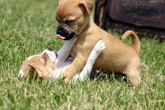

Intro
A puppy is a juvenile dog. Some puppies can weigh 1–3 lbs, while larger ones can weigh up to 15–23 lbs. All healthy puppies grow quickly after birth. A puppy's coat color may change as the puppy grows older, as is commonly seen in breeds such as the Yorkshire Terrier. In vernacular English, puppy refers specifically to dogs while pup may often be used for other mammals such as seals, giraffes, guinea pigs, or even rats.

Development
Born after an average of 63 days of gestation, puppies emerge in an amnion that is bitten off and eaten by the mother dog. Puppies begin to nurse almost immediately. If the litter exceeds six puppies, particularly if one or more are obvious runts, human intervention in hand-feeding the stronger puppies is necessary to ensure that the runts get proper nourishment and attention from the mother. As they reach one month of age, puppies are gradually weaned and begin to eat solid food. The mother may regurgitate partially digested food for the puppies or might let them eat some of her solid food.The mother dog usually refuses to nurse at this stage, though she might let them occasionally nurse for comfort.
At first, puppies spend the large majority of their time sleeping and the rest feeding. They instinctively pile together into a heap, and become distressed if separated from physical contact with their littermates, by even a short distance.
Puppies are born with a fully functional sense of smell but can't open their eyes. During their first two weeks, a puppy's senses all develop rapidly. During this stage the nose is the primary sense organ used by puppies to find their mother's teats, and to locate their litter-mates, if they become separated by a short distance. Puppies open their eyes about nine to eleven days following birth. At first, their retinas are poorly developed and their vision is poor. Puppies are not able to see as well as adult dogs. In addition, puppies' ears remain sealed until about thirteen to seventeen days after birth, after which they respond more actively to sounds. Between two to four weeks old, puppies usually begin to growl, bite, wag their tails, and bark.
Puppies develop very quickly during their first three months, particularly after their eyes and ears open and they are no longer completely dependent on their mother. Their coordination and strength improve, they spar with their litter-mates, and begin to explore the world outside the nest. They play wrestling, chase, dominance, and tug-of-war games
Docking and Declawing
The practice of docking began primarily as a preventive measure for injury among working dogs. Docking is now primarily performed for purely cosmetic reasons, and some breeds traditionally have their tails cropped anywhere from slightly to almost entirely. Some countries now ban cropping and docking for cosmetic purposes, while others, such as the United States, permit it. The practice is currently opposed by the American Veterinary Medical Association. Some breeders also prefer to declaw the dogs to prevent future injuries caused by scratching, or in the case of dewclaws, ingrown and ripped off nails. Docking and declawing procedures are usually performed within the first few days after birth, by a veterinarian, or by an experienced breeder.
Socialization
Puppies are highly social animals and spend most of their waking hours interacting with either their mother or littermates. It is important that puppies are socialized with humans, particularly between the ages of eight and twelve weeks, so as to encourage healthy interaction and develop the puppy's social skills around people. Puppies ideally should be exposed to as wide a variety of friendly people as possible during this period. Dogs that do not receive adequate socialization during this sensitive period may display fearful behavior around humans or other dogs as adults. In small breeds, puppies are considered puppies up until around 1 year of age as opposed to large breeds that may be regarded as a puppies up until around 2 years old.
